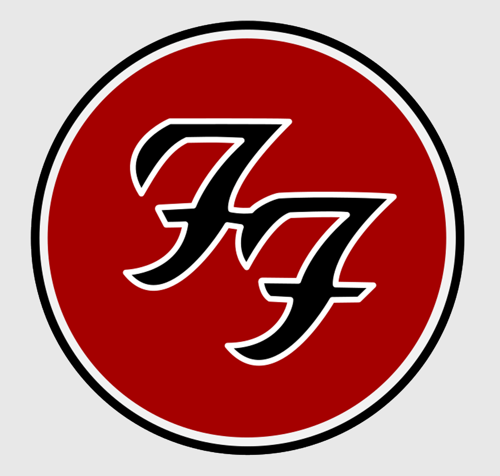
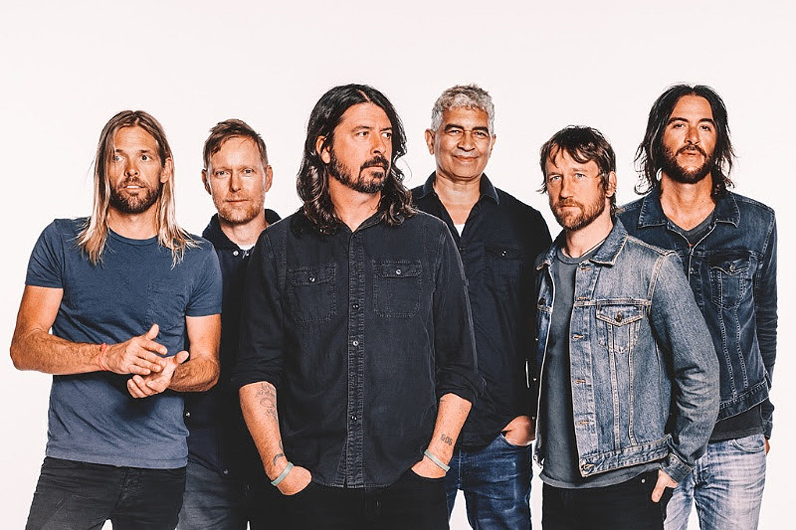
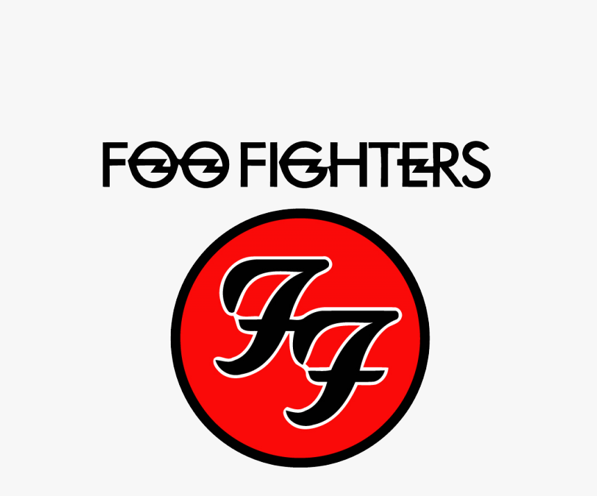
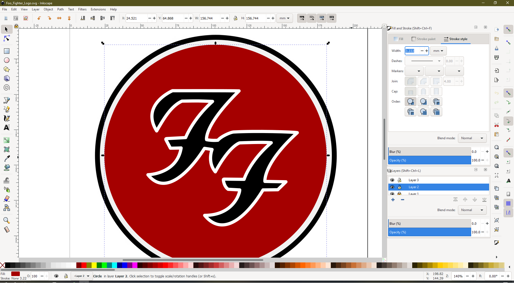

Grafika
Inkscape
Izrada logotipa banda Foo Fighters u programu Inkscape
Za grafiku sam se odlučio koristiti Inkscape te izraditi logotip Foo Fightersa
Izabrao sam ga pored Blendera budući da je Blender znatno teži i nemam prethodnog iskustva u njemu
- Inkscape je program otvorenog koda, profesionalni je uređivač vektorskih grafika za Linux, Windows, i macOS
Foo Fighters logo


The Foo Fighters
Lijevo se nalazi logo koji sam izradio u Inkscapeu, a ispod možete stisnuti i pročitati detaljan postupak izrade
Detaljan postupak izrade
- Dodavanje slike loga koju sam preuzeo sa interneta te ju koristio kao template kod izrade
- Odabir alata koji kreira krugove, elipse i lukove na traci lijevo, kreiranje pravilnog kruga sa tipkom CTRL, pozicioniranje..
- Desni klik → Fill and stroke → odabir no Fill, dodavanje crnog Stroke-a od oko 0.3cm
- Kreiranje novog layera
- Odabir bezier tools alata, povlačenje linija kreiranjem točaka po slovima F F koji se nalaze na logu
- Spajanje početne i završne točke
- Odabir edit paths by nodes alata te postepeno uređivanje linija pomoću premještanja čvorova dok linije lijepo ne okružuju logo i stvore željeni oblik
- Glađenje svih oštrih rubova koji su pritom nastali
- Odabir layera 2 (crni stroke početnog kruga), kopiranje obruča te kreiranje još jednog
- Smanjivanje držeći tipko CTRL tako da se novi nalazi unutar vanjskog, a između novog i vanjskog sam pustio prazan prostor koji onda označava bijeli obruč
- Novom obruču dodao sam tamno crvenu boju i za stroke i za fill
- Odabir layera 3 → Fill and stroke → dodavanje crnog filla, dodavanje bijelog Strokea od oko 0.2cm → Round join odabir kako bi rubovi bili okrugli
- Završni pregled i export
Originalni logo

